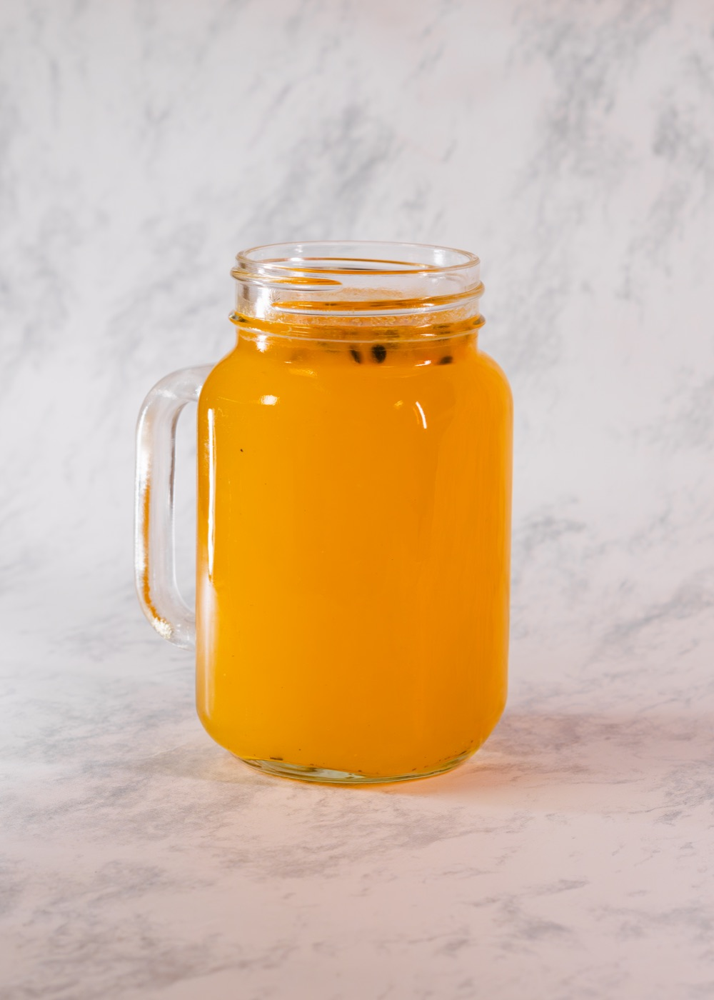
01
Birria de chivo, res y cerdo
Cocida a fuego lento, servida con cebolla, cilantro, limón y tortillas recién hechas a mano.
Especialidad de la casaBirriería tradicional
Receta de familia, comal caliente y la paciencia que pide una birria bien hecha. Así desde 1978.
Nuestra historia
Cocula, un pueblo al sur de Jalisco, es reconocido como la cuna del mariachi y de la birria: de ahí vienen dos de las tradiciones más queridas de la cultura mexicana.
De ese origen venimos. Desde 1978 servimos birria con el mismo cariño y la misma paciencia que se cocina en casa: comal caliente, tortilla recién hecha y salsa al molcajete. Una tradición familiar que seguimos cuidando todos los días.
Conoce nuestra mesa →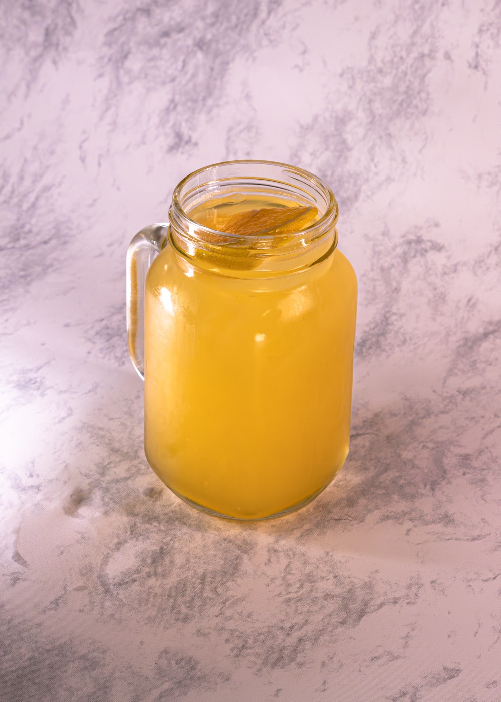
La barra
Trabajamos con mezcaleros pequeños de Oaxaca y Jalisco. Cada mezcalita lleva fruta de temporada, agave joven y la sal que mandan los abuelos.
«El mezcal no se toma de un trago, se besa.»


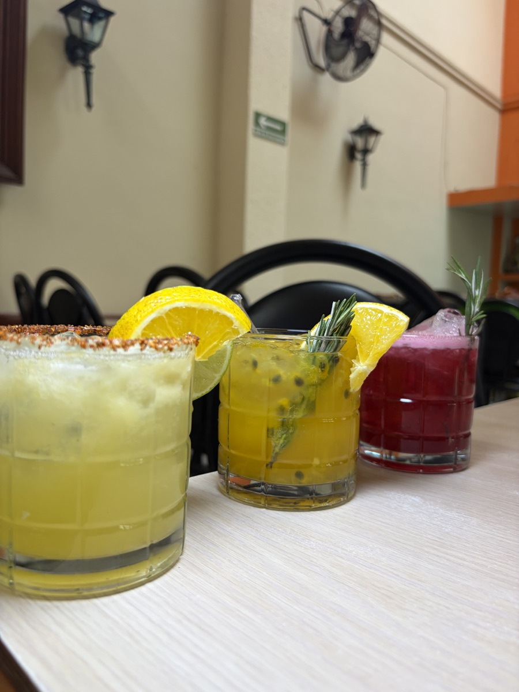
Sala & mesa
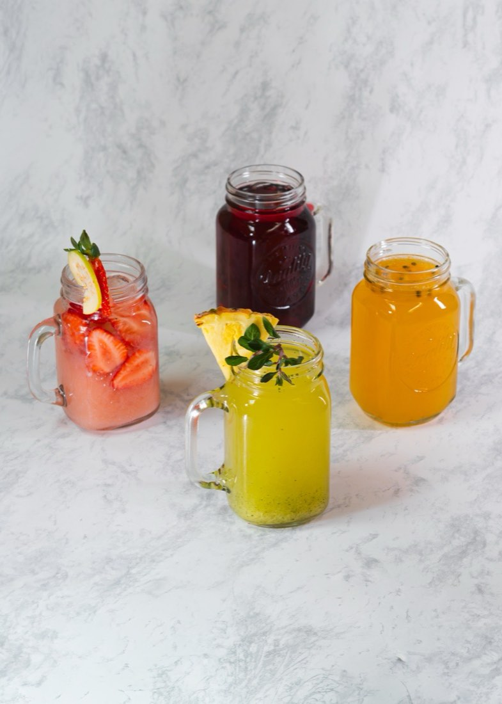
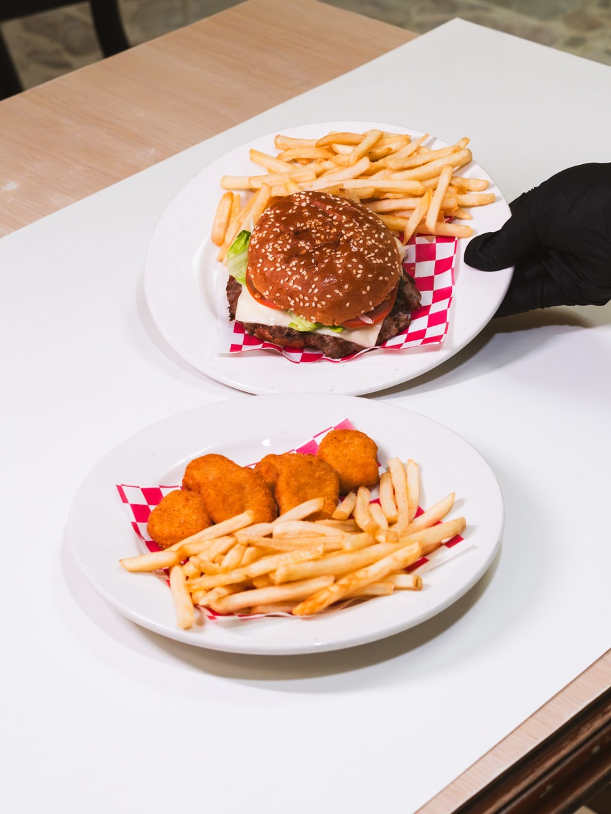
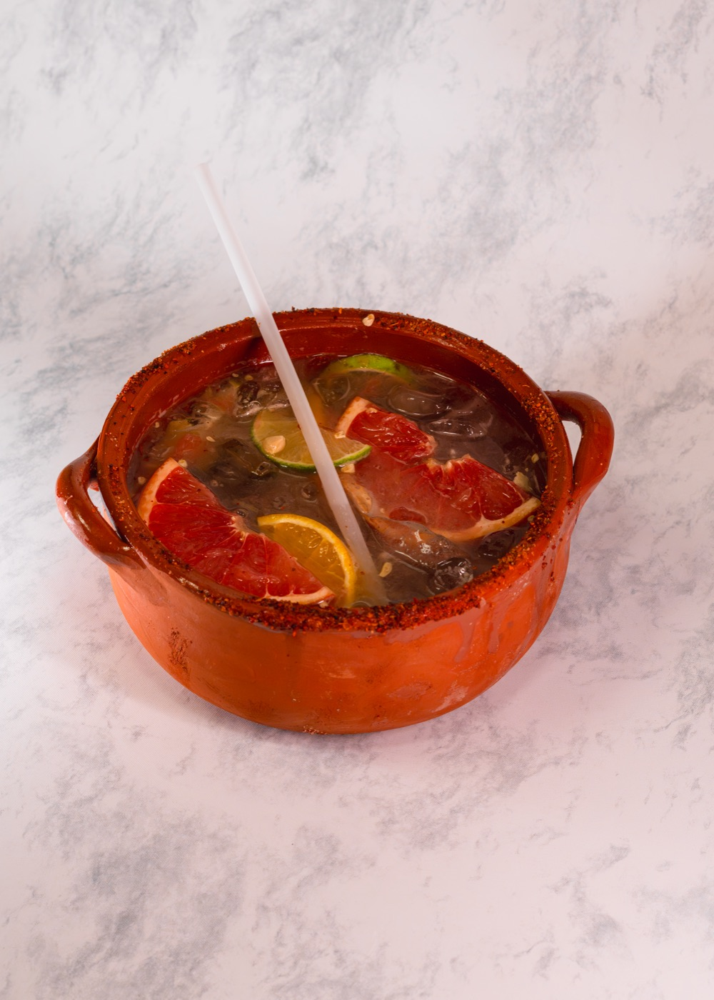
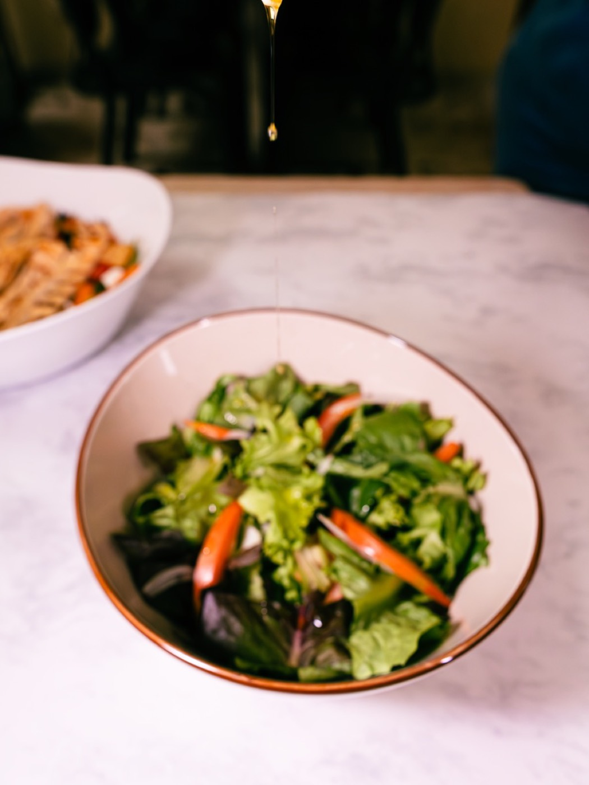
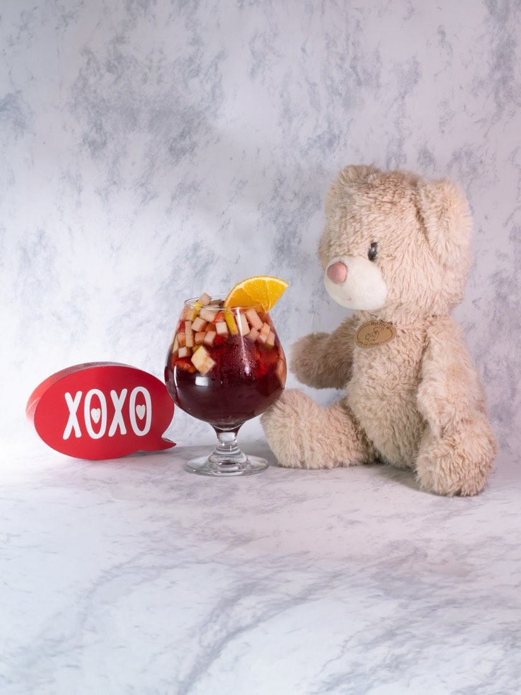
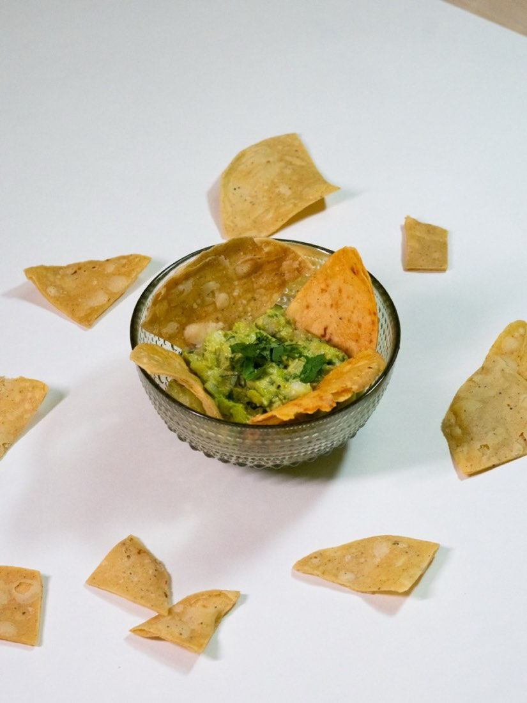
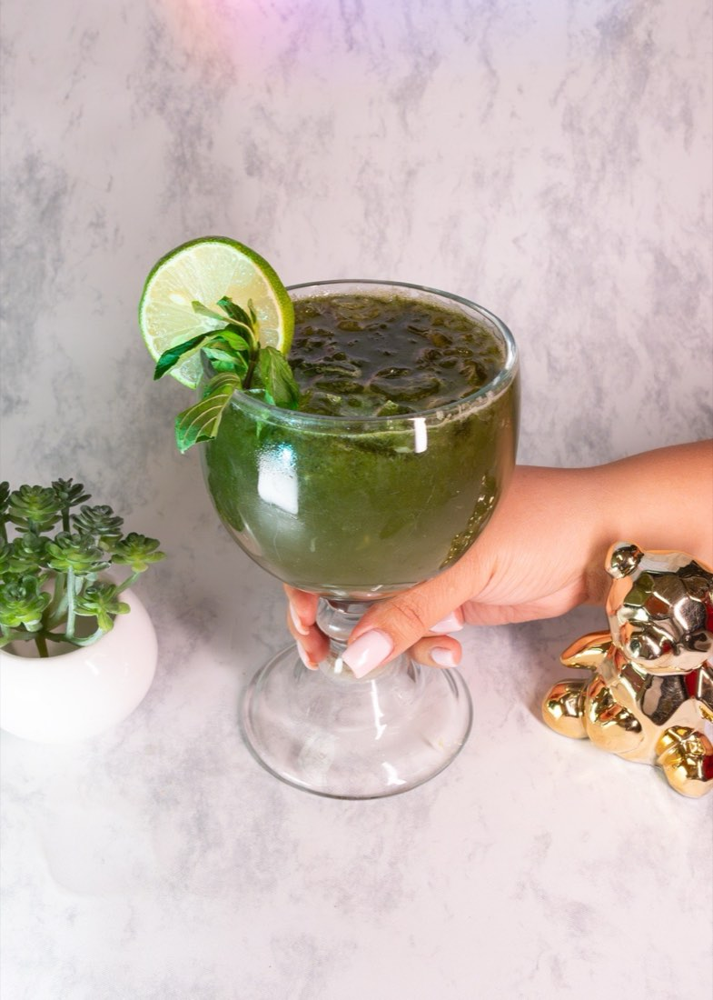
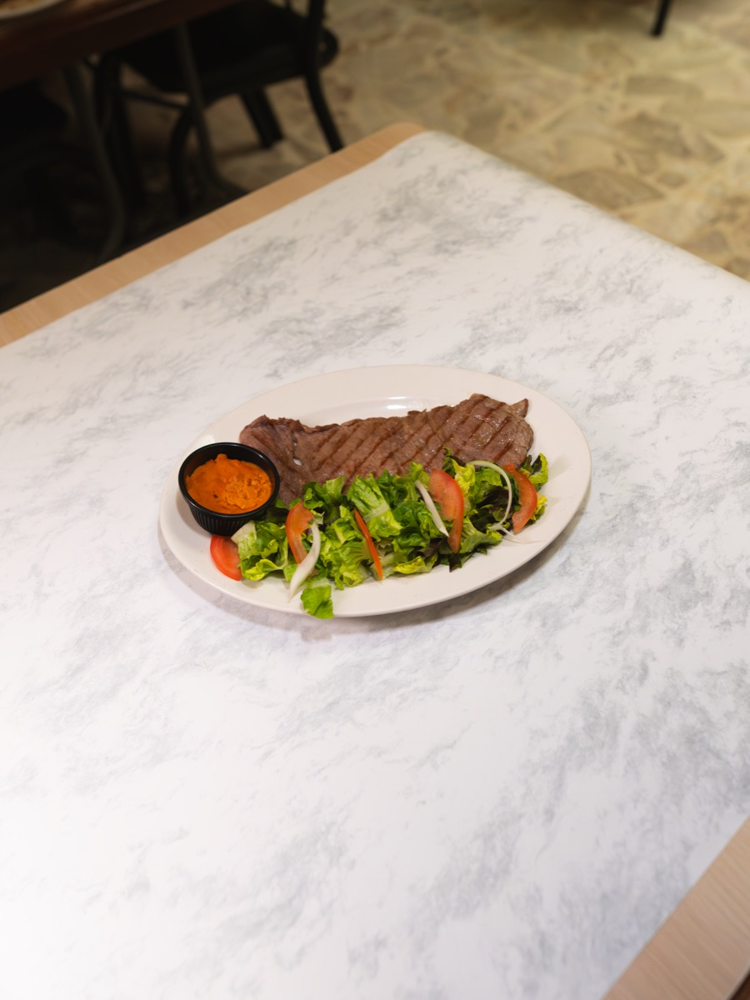
Visítanos
Dirección
Calz. del Federalismo Nte. 1374
Mezquitán · C.P. 44260
Guadalajara, Jalisco
Horario
Abierto todos los días
de 10:00 a 18:00 h
Teléfono
Síguenos